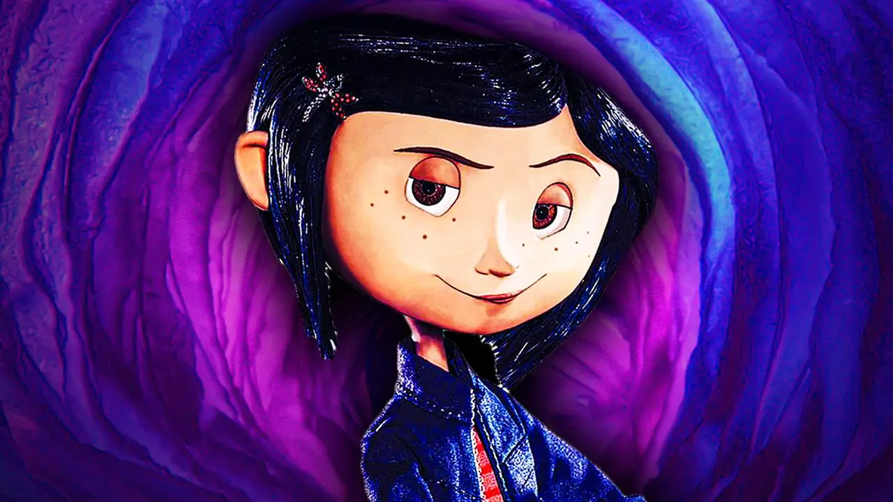

Coraline es una de las obras mejor ejecutadas de Neil Gaiman, autor que a pesar de su éxito cuenta con un inmenso número de productos de escasa calidad en su manufactura.
Narra una historia de terror que parte desde el punto de vista de una niña de 12 años, Coraline Jones. El hecho de que su protagonista aún no haya abandonado la infancia no lo convierte obligatoriamente en un libro de miedo para niños, aunque por la intención es evidente que está dirigido a un público juvenil. Por supuesto que el publico adulto no se queda exento, ya que, es una narración para cualquier tipo de publico.
La protagonista es una niña muy curiosa, que es extremadamente flaca debido a la soledad en la que se encuentra ya que sus papas no le ponen mucha atención, debido, a que redactan un libro sobre plantas. La protagonista es una niña muy curiosa, que es extremadamente flaca debido a la soledad en la que se encuentra ya que sus papas no le ponen mucha atención, debido, a que redactan un libro sobre plantas.
Las ansias que muestra Coraline la hacen llevar a explorar su nueva casa, la cual se denota un poco vieja con muchas puertas y ventanas misteriosas. en especial una que le llama la atención, lo curioso es ver que solo ella puede ver un pasadizo secreto por una puerta pequeña, en la cual solo cabe de manera agachada.
Abrirla es un reto y comprobar adónde lleva una aventura. No duda en preguntar a su madre sobre la enigmática puerta. Esta saca un manojo de llaves y coge la más “grande, renegrida y oxidada”. La puerta solo da a una pared de ladrillos. La madre de Coraline piensa que seguramente se tapo al dividir la casa en varios apartamentos y le da tan poca importancia que la deja abierta.
La puerta será solamente uno de los muchos símbolos y objetos mágicos que se activarán a lo largo de la historia.
Desde siempre, las puertas han transportado a los héroes a mundos lejanos y maravillosos. Eso es justamente lo que le sucede a Coraline, que va a parar a una casa casi exactamente igual a la suya. Algunos cambios en la decoración la advierten del peligro, como el extraño color verde de la pared o el cuadro del niño vestido con ropa antigua, que en la nueva casa “miraba las burbujas como si pensase hacer algo repugnante con ellas”.
El tiempo es un factor muy importante dentro de esta trama, el interior de la casa, el jardín y los alrededores son los límites dentro de los que van a desarrollarse los acontecimientos. Estos espacios funcionarán como puntos de inflexión. El pozo, por ejemplo, marcará el final de la historia.
En definitiva, Coraline nos habla y se dentra a los problemas que enfrenta una familia ordinaria, se expresan temas como la soledad, el deseo de un mundo mejor, de valentía y de amor. sobre todo el enfrentamiento para poder salir de estos problemas y que los lazos de una familia siempre van hacer mas fuertes, y pase a lo que pase siempre se puede salir adelante con la ayuda de todos lo miembros. al final nos queda un buen sabor de boca ya que Coraline logra por fin consolidar una familia unida.
